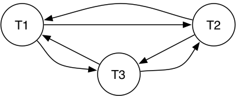

COMP3311 Week 10 Monday Lecture
COMP3311 22T3 ♢ Week 10 Monday Lecture ♢ [0/35]
In today's lecture ...
- Transactions, Concurrency, DB survey
Things to do ...
- Quiz 6 due by 23:59 Friday (Nov 18)
Coming Up ...
- Tuesday lecture ONLINE (Zoom) ... discuss the exam
- Help Session on Wednesday, 3-5 on Zoom
- Exam on Fri 25 Nov, details tomorrow, sample exams out now
COMP3311 22T3 ♢ Week 10 Monday Lecture ♢ [1/35]
Transaction (tx) = application unit of work involving multiple DB updates
Want tx's to be: Atomic, Consistent, Isolated, Durable
Description of tx's normally abstracted to R(X), W(X), C, A operations
Schedule = sequence of operations involving one or more tx's
Example serial schedule involving three transactions:
T1: R(X) W(X) R(Y) W(Y)
T2: R(Y) W(Y) R(X)
T3: R(X) W(X) W(Z)
Example concurrent schedule involving same three transactions:
T1: R(X) W(X) R(Y) W(Y)
T2: R(Y) W(Y) R(X)
T3: R(X) W(X) W(Z)
COMP3311 22T3 ♢ Week 10 Monday Lecture ♢ [2/35]
❖ Transactions (review) (cont) | |
Serial schedules (e.g. T1 then T2 then T3) are valid/safe
Not all concurrent schedules are valid (e.g. above example is not safe)
Serializable schedule = concurrent schedule equivalent to a serial schedule
Example serializable concurrent schedule:
T1: R(X) W(X) R(Y) W(Y)
T2: R(Y) W(Y) R(X)
T3: R(X) W(X) W(Z)
Two notions of serializability: conflict serializability, view serializability
DBMSs aim to control concurrency via locking and rollback
- arrange order of
R and W operations to produce serializable schedules
COMP3311 22T3 ♢ Week 10 Monday Lecture ♢ [3/35]
❖ Conflict Serializability | |
A characterization of serializability based on conflicting operations
Two transactions have a potential conflict if
- they perform operations on the same data item
- at least one of the operations is a write operation
If we can transform a schedule
- by swapping the order of non-conflicting operations
- such that the result is a serial schedule
then we say that the schedule is
conflict serializible.
Conflict serializability can also be tested via a precedence graph
COMP3311 22T3 ♢ Week 10 Monday Lecture ♢ [4/35]
❖ Conflict Serializability (cont) | |
Example schedule which is not conflict serializable:
T1: R(X) R(Y) W(X) W(Y)
T2: R(X) W(X)
T3: R(X) W(X)
swap
T1: R(X) W(X) R(Y) W(Y)
T2: R(X) W(X)
T3: R(X) W(X)
Precendence graph for the above schedule:

COMP3311 22T3 ♢ Week 10 Monday Lecture ♢ [5/35]
View Serializability is
- an alternative formulation of serializability
- that is less conservative than conflict serializability (CS)
(some safe schedules that are view serializable are not conflict serializable)
As with CS, it is based on a notion of schedule equivalence
- a schedule is "safe" if view equivalent to a serial schedule
The idea: if across the two schedules ...
- they read the same version of a shared object
- they write the same final version of an object
then they are
view equivalent
COMP3311 22T3 ♢ Week 10 Monday Lecture ♢ [6/35]
❖ View Serializability (cont) | |
Two schedules S and S' on T1 .. Tn
are view equivalent iff
- for each shared data item X
- if, in S, Tj reads the initial value of X,
then, in S', Tj also reads the initial value of X
- if, in S, Tj reads X written by Tk,
then, in S' Tj also reads the value of X written by Tk in S'
- if, in S, Tj performs the final write of X,
then, in S', Tj also performs the final write of X
To check serializibilty of
S ...
- find a serial schedule that is view equivalent to S
- from among the n! possible serial schedules
COMP3311 22T3 ♢ Week 10 Monday Lecture ♢ [7/35]
❖ Exercise: Checking Serializability | |
Check whether each schedule is conflict/view serializable:
- T1:R(X) T2:R(X) T1:W(X) T2:W(X)
- T1:W(X) T2:R(Y) T1:R(Y) T2:R(X)
- T1:R(X) T2:W(X) T1:W(X) T3:W(X)
COMP3311 22T3 ♢ Week 10 Monday Lecture ♢ [8/35]
Serializability tests are useful theoretically ...
But don't provide a mechanism for organising schedules
- they can only be done "after the event"
- they are computationally very expensive O(n!)
What is required are methods that ...
- can be applied to each transaction individually
- guarantee that overall schedule is serializable
COMP3311 22T3 ♢ Week 10 Monday Lecture ♢ [9/35]
❖ Concurrency Control (cont) | |
Approaches to ensuring ACID transactions:
- lock-based
Synchronise transaction execution via locks on some portion
of the database.
- version-based
Allow multiple consistent versions of the data to exist, and
allow each transaction exclusive access to one version.
- timestamp-based
Organise transaction execution in advance by assigning timestamps to
operations.
- validation-based (optimistic concurrency control)
Exploit typical execution-sequence properties of transactions to determine safety dynamically.
COMP3311 22T3 ♢ Week 10 Monday Lecture ♢ [10/35]
❖ Lock-based Concurrency Control | |
Synchronise access to shared data items via following rules:
- before reading X, get shared (read) lock on X
- before writing X, get exclusive (write) lock on X
- an attempt to get a shared lock on X is blocked
if another transaction already has exclusive lock on X
- an attempt to get an exclusive lock on X is blocked
if another transaction has any kind of lock on X
These rules alone do not guarantee serializability ...
- but two-phase locking does
- acquire all needed locks before performing any unlocks
Locking also introduces potential for deadlock and starvation.
COMP3311 22T3 ♢ Week 10 Monday Lecture ♢ [11/35]
❖ Lock-based Concurrency Control (cont) | |
Examples of locking:
Schedule 1
T1: Lx(X) R(X) W(X) U(X)
T2: Lx(Y) R(Y) W(Y) U(Y)
Schedule 2
T1: Lx(X) R(X) W(X) U(X)
T2: Lx(X) .............. R(X) W(X) U(X)
New operations: Lx() = exclusive lock, Ls() = shared lock, U() unlock
Note: in Schedule 2, locking forces serial execution
This is not generally the case; there may be some concurrency
In general, locking reduces concurrency, but gains safety
COMP3311 22T3 ♢ Week 10 Monday Lecture ♢ [12/35]
Some locking in PG is implicit (e.g. changing schema)
Explicit locks are available:
LOCK TABLE TableName [ IN LockMode MODE ]
Some possible LockModes:
-
SHARE ... simply reading the table
-
SHARE ROW EXCLUSIVE ... intened to update table
No
UNLOCK ... all locks are released at end of transaction
Row-level locking: lock all selected rows for writing
SELECT * FROM Table WHERE Cond FOR UPDATE
COMP3311 22T3 ♢ Week 10 Monday Lecture ♢ [13/35]
❖ Locking in PostgreSQL (cont) | |
Two examples of lock usage in PostgreSQL:
BEGIN WORK;
LOCK TABLE films IN SHARE MODE;
SELECT id INTO _id_ FROM films
WHERE name = 'Star Wars: Episode I - The Phantom Menace';
-- Do ROLLBACK if record was not returned
INSERT INTO films_user_comments VALUES
(_id_, 'GREAT! I was waiting for it for so long!');
COMMIT WORK;
BEGIN WORK;
LOCK TABLE films IN SHARE ROW EXCLUSIVE MODE;
DELETE FROM films_user_comments WHERE id IN
(SELECT id FROM films WHERE rating < 5);
DELETE FROM films WHERE rating < 5;
COMMIT WORK;
COMP3311 22T3 ♢ Week 10 Monday Lecture ♢ [14/35]
Apply appropriate locking in the bank transfer transaction.
create or replace function
transfer(N integer, Src text, Dest text)
returns integer
declare
sID integer; dID integer; avail integer;
begin
select id,balance into sID,avail
from Accounts where name=Src;
...
return nextval('tx_id_seq');
end;
COMP3311 22T3 ♢ Week 10 Monday Lecture ♢ [15/35]
❖ Locking and Performance | |
Locking reduces concurrency ⇒ lower throughput.
Granularity of locking can impact performance:
+
lock a small item ⇒ more of database accessible
+
lock a small item ⇒ quick update ⇒ quick lock release
-
lock small items ⇒ more locks ⇒ more lock management
Granularity levels: field, row (tuple), table, whole database
Many DBMSs support multiple lock-granularities.
COMP3311 22T3 ♢ Week 10 Monday Lecture ♢ [16/35]
❖ Multi-version Concurrency Control | |
One approach to reducing the requirement for locks is to
- provide multiple (consistent) versions of the database
- give each transaction access to an "appropriate" version
(i.e. a version that maintains the serializability of the transaction)
This approach is called
Multi-Version Concurrency Control.
Differences between MVCC and standard locking models:
- writing never blocks reading (make new version of tuple)
- reading never blocks writing (read old version of tuple)
PostgreSQL pioneered MVCC as a concurrency control mechanism
COMP3311 22T3 ♢ Week 10 Monday Lecture ♢ [17/35]
❖ Multi-version Concurrency Control (cont) | |
PostgreSQL MVCC ...
- each tuple is tagged with (time of) tx that created/deleted it
- each tuple is linked to the next newer version of same tuple
Access to a tuple requires
- check most recent version which existed when tx started; use that version
Periodic
vacuum process deletes tuples that
- are not accessible to any currently executing transactions
Time/space overheads in implementing MVCC
- are justified by reduced requirement for locking (⇒ more concurrency)
COMP3311 22T3 ♢ Week 10 Monday Lecture ♢ [18/35]
❖ Concurrency Control in SQL | |
Transactions in SQL are specified by
-
BEGIN ... start a transaction
-
COMMIT ... successfully complete a transaction
-
ROLLBACK ... undo changes made by transaction + abort
In PostgreSQL, other actions that cause rollback:
- raise exception during execution of a function
- returning null from a before trigger
COMP3311 22T3 ♢ Week 10 Monday Lecture ♢ [19/35]
❖ Concurrency Control in SQL (cont) | |
Concurrent access can be controlled via SQL:
- table-level locking: apply lock to entire table
- row-level locking: apply lock to just some rows
LOCK TABLE explicitly acquires lock on an entire table.
Other SQL commands implictly acquire appropriate locks, e.g.
-
ALTER TABLE acquires an exclusive lock on table
-
UPDATE, DELETE acquire locks on affected rows
All locks are released at end of transaction
(no explicit unlock)
COMP3311 22T3 ♢ Week 10 Monday Lecture ♢ [20/35]
Core "database" goals:
- deal with very large amounts of data (terabytes, petabyes, ...)
- very-high-level languages (deal with big data in uniform ways)
- query optimisation (evaluation too slow ⇒ useless)
At the moment
(and for the last 30 years) RDBMSs dominate ...
- simple, clean data model, backed up by theory
- high-level language for accessing data
- 50 years development work on RDB engine technology
RDBMSs work well in domains with uniform, structured data.
COMP3311 22T3 ♢ Week 10 Monday Lecture ♢ [21/35]
❖ Future of Database (cont) | |
Limitations/pitfalls of RDBMSs:
- NULL is ambiguous: unknown, not applicable, not supplied
- "limited" support for constraints/integrity and rules
- no support for uncertainty (data represents the state-of-the-world)
- data model too simple (e.g. no support for complex objects)
- query model too rigid (e.g. no approximate match)
- cotinually changing data sources not well-handled
- data must be "molded" to fit a single rigid schema
- database systems must be manually "tuned"
- do not scale well to some data sets (e.g. Google, Telco's)
COMP3311 22T3 ♢ Week 10 Monday Lecture ♢ [22/35]
❖ Future of Database (cont) | |
How to overcome (some of) these limitations?
Extend the relational model ...
- add new data types and query ops for new applications
- deal with uncertainty/inaccuracy/approximation in data
Replace the relational model ...
- object-oriented DBMS ... OO programming with persistent objects
- XML DBMS ... all data stored as XML documents, new query model
- application-effective data model (e.g. (key,value) pairs)
Performance: DBMSs that "tune" themselves ...
COMP3311 22T3 ♢ Week 10 Monday Lecture ♢ [23/35]
Some modern applications have massive data sets (e.g. Google)
- far too large to store on a single machine/RDBMS
- query demands far too high even if could store in DBMS
Approach to dealing with such data
- distribute data over large collection of nodes (redundancy)
- provide computational mechanisms for distributing computation
Often this data does not need full relational selection
- represent data via (key,value) pairs
- unique key values can be used for addressing data
- values can be large objects (e.g. web pages, images, ...)
COMP3311 22T3 ♢ Week 10 Monday Lecture ♢ [24/35]
Popular computational approach to Big Data: map/reduce
- suitable for widely-distributed, very-large data
- allows parallel computation on such data to be easily specified
- distribute (map) parts of computation across network
- compute in parallel (possibly with further map'ing)
- merge (reduce) multiple results for delivery to requestor
Some Big Data proponents see no future need for SQL/relational ...
- depends on application (e.g. hard integrity vs eventual consistency)
Humour:
Parody of noSQL fans
(strong language warning)
COMP3311 22T3 ♢ Week 10 Monday Lecture ♢ [25/35]
❖ Object-relational Mapping | |
Pure OO databases came and went in the 90's (similarly XML databases)
A compromise:
- data stored in relational format
- "wrapper" gives the apperance of objects
Programmer works purely with objects; wrapper converts to SQL
Problems:
- OO query mechanisms are no better than SQL
- translation leads to inefficient SQL
COMP3311 22T3 ♢ Week 10 Monday Lecture ♢ [26/35]
DBMSs generally do precise matching (although like/regexps)
Information retrieval systems do approximate matching.
E.g. documents containing these words (Google, etc.)
Also introduces notion of "quality" of matching
(e.g. tuple T1 is a better match than tuple T2)
Quality also implies ranking of results.
Much activity in incorporating IR ideas into DBMS context.
Goal: support database exploration better.
COMP3311 22T3 ♢ Week 10 Monday Lecture ♢ [27/35]
Data which does not fit the "tabular model":
- image, video, music, text, ... (and combinations of these)
Research problems:
- how to specify queries on such data?
(image1 ≅ image2)
- how to "display" results?
(synchronize components)
Solutions to the first problem typically:
- extend notions of "matching"/indexes for querying
- require sophisticated methods for capturing data features
Sample query: find other songs
like this one?
COMP3311 22T3 ♢ Week 10 Monday Lecture ♢ [28/35]
Multimedia/IR introduces approximate matching.
In some contexts, we have approximate/uncertain data.
E.g. witness statements in a crime-fighting database
"I think the getaway car was red ... or maybe orange ..."
"I am 75% sure that John carried out the crime"
Work by Jennifer Widom at Stanford on the Trio system
- extends the relational model (ULDB)
- extends the query language (TriQL)
COMP3311 22T3 ♢ Week 10 Monday Lecture ♢ [29/35]
❖ Stream Management Systems | |
Makes one addition to the relational model
- stream = infinite sequence of tuples, arriving one-at-a-time
Applications:
news feeds, telecomms, monitoring web usage, ...
RDBMSs: run a variety of queries on (relatively) fixed data
StreamDBs: run fixed queries on changing data (stream)
Approaches:
- window = relation formed from a stream via a rule
- stream data type = build new stream-specific operations
COMP3311 22T3 ♢ Week 10 Monday Lecture ♢ [30/35]
Uses graphs rather than tables as basic data structure tool.
Applications: complex data representation, via "flexible" objects
Implementing graphs in RDBMSs is possible, but often inefficient.
Graph nature of data changes query model considerably.
- different kinds of queries: kNN, neighbourhood, skyline
Research problem: query processing for large graphs
COMP3311 22T3 ♢ Week 10 Monday Lecture ♢ [31/35]
Characteristics of dispersed databases:
- very large numbers of small processing nodes
- data is distributed/shared among nodes
Applications:
environmental monitoring devices, "intelligent dust", ...
Research issues:
- query/search strategies
(how to organise query processing)
- distribution of data
(trade-off between centralised and diffused)
Less extreme versions of this already exist:
- grid and cloud computing
- database management for mobile devices
COMP3311 22T3 ♢ Week 10 Monday Lecture ♢ [32/35]
Disk-based data is slow to access, and page-at-a-time
Non-volatile non-disk storage is becoming larger and cheaper
- many databases would fit in memory ... disk as a backup/archive
Research problems:
- how to structure data on SSD-like devices
- how to process queries in such an environment
COMP3311 22T3 ♢ Week 10 Monday Lecture ♢ [33/35]
Open problems:
- database integration/federation
- making a collection of heterogeneous databases work together
- schema reconciliation is a difficult problem (vocab, schemas)
- replication
- maintain consistent copies of one database across multiple hosts
- how to propagate changes systematically?
COMP3311 22T3 ♢ Week 10 Monday Lecture ♢ [34/35]
COMP9312 Data Analyutics for Graphs
- manipulating large-scale graph structures
COMP9313 Big Data Management
- handling data that won't fit in a DBMS on one machine
COMP9315 Database Systems Implementation
- comprehensive study of DBMS internals
COMP9319 Web Data Compression and Search
- compression and searching algorithms, and XML
COMP6714 Information Retrieval and Web Search
- finding information in unstructured text
COMP3311 22T3 ♢ Week 10 Monday Lecture ♢ [35/35]
Produced: 14 Nov 2022